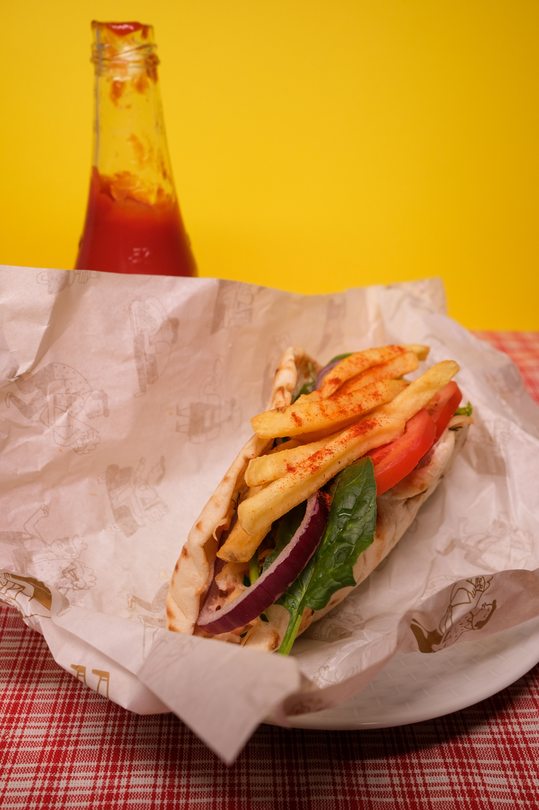

Oven Baked Chicken Kebabs
For more easy and delicious recipes, please visit our home.

These delicious oven-baked kebabs are served with a simple yogurt, garlic sauce, fresh tomatoes, and onion salad. It's a simple, family friendly recipe that every one will enjoy.
Ingredients
Chicken Kebabs
- 1kg ground chicken
- 1 brown onion, grated
- 1 tbsp freshly minced garlic
- 2 tbsp tomato paste
- 1 tbsp sweet paprika
- 2 tsp dried cumin
- 1 tsp onion powder
- 1 tsp garlic powder
- 1 tsp oregano
- 2 tsp sea salt flakes
- 1/2 tsp freshley cracked black pepper
- 2 tbsp finely chopped coriander
- Olive oil spray
Yogurt Garlic Sauce
- 125g plain greek yogurt
- 125g whole-egg mayonnaise
- 1 garlic clove, finely minced
- 1 tbsp lemon juice
- 1 tbsp olive oil
- 1/2 tsp sea salt flakes
Tomato and Onion Salad
- 200g cherry tomatoes, quartered
- 1/4 red onion, very finely sliced
- 2 tbsp finely chopped flat-leafed parsley
- 1/2 tsp sumac
- 1 tbsp lemon juice
- 1 tbsp olive oil
- 1 pinch sea salt flakes
To Serve
- Flatbreads
- Hummus
- Lemon wedges